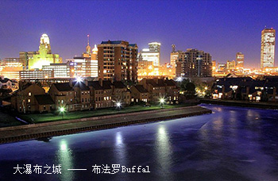
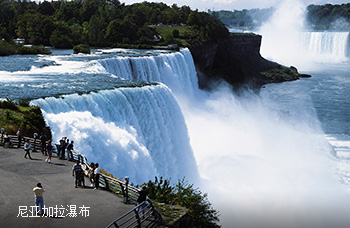
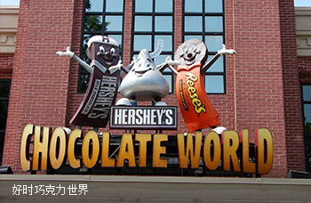
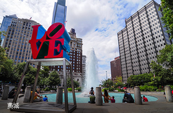
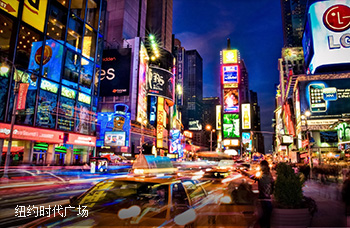
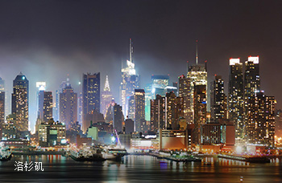
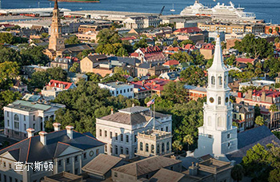

-
D1 上海北京波士顿上海搭乘国际航班（经转机）前往美国跨越太平洋，放飞您自由的心情。波士顿是一个比美国历史更悠久的城市。波士顿享有美国的雅典之称，是一座“文化”都市。晚餐后入住酒店休息。
-
D2 波士顿布法罗早餐后专车前往美国纽约州西部的大瀑布之城——布法罗（Buffal，又名“水牛城”）。布法罗位于伊利湖东端、尼亚加拉河的源头，人口约27万，是纽约州第二大城市。1818年五大湖的第一艘轮船在这里建成下水。1825年从布法罗通奥尔巴尼的伊利运河开通，使布法罗成了加拿大通往美国东部的运输枢纽。抵达后入住酒店休息。

-
D3 尼亚加拉大瀑布好时镇早餐后游览【尼亚加拉瀑布】（2小时），瀑布位于加拿大和美国交界的尼亚加拉河中段，号称世界七大奇景之一，与南美的伊瓜苏瀑布及非洲的维多利亚瀑布合称“世界三大瀑布”。它以宏伟的气势，丰沛而浩瀚的水汽，震撼了所有的游人。特别安排赠送乘坐【雾中少女号游船】近距离观赏尼亚加拉大瀑布壮观雄伟的景象。午餐后前往宾州首府哈里斯堡前往“世界上最甜蜜的地方”——好时镇！好时巧克力风靡全球，好时镇就是好时巧克力工厂的所在地，镇上居民几乎全是好时公司的员工。好时镇上的【好时巧克力世界】是很多美国人童年记忆的一部分，在这里可以坐上小轨车游览巧克力制作的全过程。
-
D4 好时镇华盛顿驱车前往美国首都华盛顿：参观巍然屹立的【华盛顿纪念碑】，它是为纪念美国首任总统乔治华盛顿而建造的，从1848年动工，直到1884才完工。参观举世闻名的总统官邸【白宫】（外观），主楼底曾有外交接待大厅，厅外是南草坪，来访国宾的欢迎仪式一般在这里举行，主楼的二层是总统家庭居住的地方。参观宏伟壮观的【国会大厦】（外观），纪念堂正中是一座高19英尺的林肯坐像。参观杰佛逊纪念堂、设计独特的越战军人纪念碑、韩战军人纪念碑。
-
D5 华盛顿长木花园费城纽约早餐后前往游览【长木花园】（约1.5小时），长木花园，又称杜邦花园，是世界一流的园艺名胜之地。1906 年，一座历史悠久、百年老树林立的植物园即将被他人砍伐用作木材，这时，工业家兼慈善家皮埃尔•杜邦解囊买下植物园，而使得这些老树得以保存。这个世界级的长木花园，如同镶嵌于历史悠久的白兰地酒山谷 (Brandywine Valley) 的一颗闪亮的宝石，是一个拥有无与伦比的美丽与壮观景色的地方。 长木花园拥有各式各样的布置和活动，从眩目的喷泉、引人入胜的音乐会和表演到精美的休闲佳肴，以及惊险刺激的布景，常年举办各种独特的活动。之后前往美国独立革命诞生地——“友爱之城”费城，参观早期的【国会大厦】（外观），《独立宣言》和美国宪法的诞生地——【独立宫】（外观），这座两层的旧式红砖楼房朴实无华，却又流露着庄严，令人肃然起敬，接着参观美国自由精神的象征——【自由钟】（外观）（共约1小时左右）。傍晚抵达东岸金融中心——纽约。抵达后入住酒店休息。
-
D6 纽约纽约市区观光：时代广场，气度非凡、高楼鳞次栉比的【洛克菲勒广场】，誉满全球的【联合国总部大楼】（外观）。随后搭乘轮渡观赏【自由女神】，在象征美国自由精神的标志——自由女神像前摄影留念，观赏纽约港奇景。登岸后参观参观世贸大厦中信废墟，【华尔街】、【第五大道】、享誉艺术殿堂的【百老汇大街】等。每一个景点都必将在您欣赏烙下难以磨灭的印象。
-
D7 纽约Woodbury Premium Outlets波士顿早餐后前往世界上最大的工厂直销店之一【Woodbury Premium Outlets】,里面有名牌220家，因为是厂家直销，所以都是正品，只是相对那些mall里卖的过季的产品，但是价格却相对便宜很多哦，一定能让你血拼到底！（方便购物，午餐自理）傍晚抵达波士顿。
-
D8 波士顿上海游览被称为“全球最多亿万富豪就读的大学”的【哈佛大学】。哈佛建立与1636年，于是有“先有哈佛，而后有美利坚”的说法。到目前为止，哈佛共出过6位美国总统，33名诺贝尔奖金获得者和32名普利策奖获得者。【麻省理工学院】是美国一所综合性私立大学。无论是在美国还是全世界都有非常重要的影响力，培养了众多对世界产生重大影响的人士，是全球高科技和高等研究的先驱领导大学。下午全搭乘国际航班返回上海，结束您的精彩美国之旅！
-
D9 抵达上海


-
D1 抵达洛杉矶飞往美国西海岸洛杉矶，抵达后安排接机，前往酒店并办理入住手续。
-
D2 洛杉矶太平洋海岸线公路圣塔芭芭拉沿着美妙的太平洋海岸线公路加州1号公路开往文图拉海滩之前，您可前往好莱坞星光大道体会这座天使之城的风光闪亮，游览中国剧院、日落大道，或来到比佛利山庄，在著名的罗迪欧大道上逛逛明星最爱光顾的商店。之后游览圣莫妮卡海滩——加州历史最久的美丽海港，或是被海滨木板小道装点的威尼斯海滩。继续向西您将经过包括马里布与奥斯纳在内的著名富人区海岸，以及位于加州中央海岸线最南部的典型海滨小城文图拉。您将在这座美丽的小城度过宁静的夜晚。
文图拉海滩

-
D1 抵达亚特兰大今日搭乘航班，飞往佐治亚州的亚特兰大市！美国南北战争期间，亚特兰大是南方生产战备物资支援军队的重要城市。1864年，舍曼将军带领军队占领亚特兰大并将整座城市付之一炬。如今这座城市已经完全恢复了美丽的风光，成为南部文化与商业的焦点，一座最具活力的城市。抵达后安排接机，入住酒店休息。
-
D2 亚特兰大今晨导游将带您前往市区，在亚特兰大游览众多景点，并了解这座城市最有名的居民---玛格丽特米切尔的生平。1936年，米切尔出版了她的小说《飘》。这部小说描写了美国南北战争期间一位农场庄园主的女儿颠沛流离的一生，并全面反映出了那个时代的风貌。塔拉之路和橡树庄园是这部小说爱好者的圣地，在这里您将看到当年电影的主演克拉克盖博和费雯丽曾穿过的戏服等众多纪念物。
